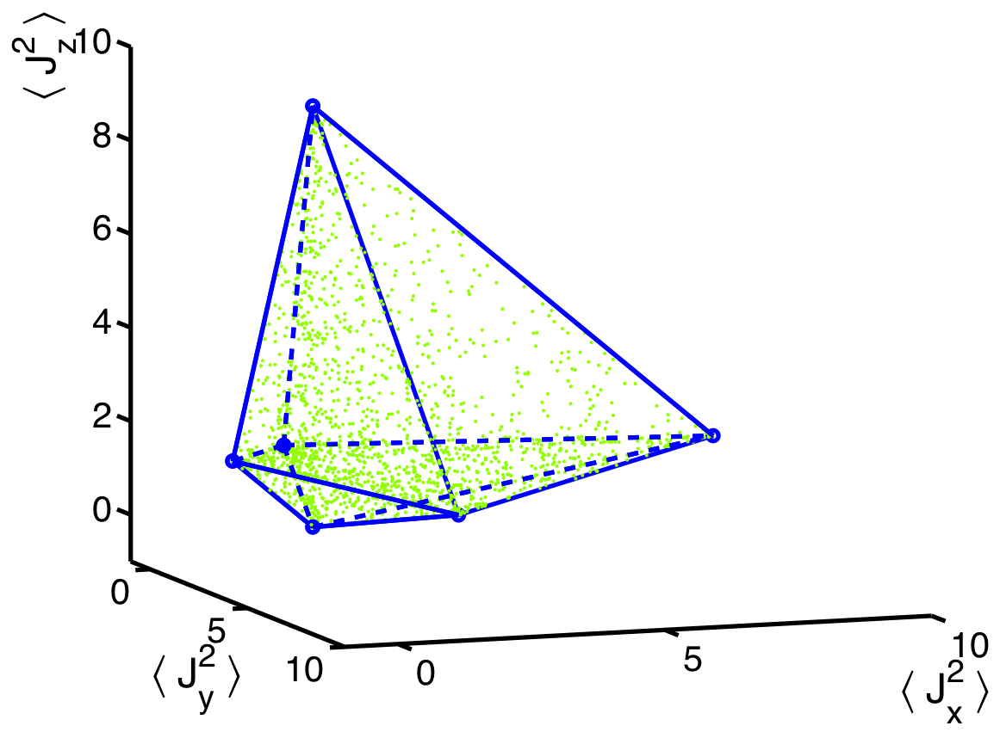
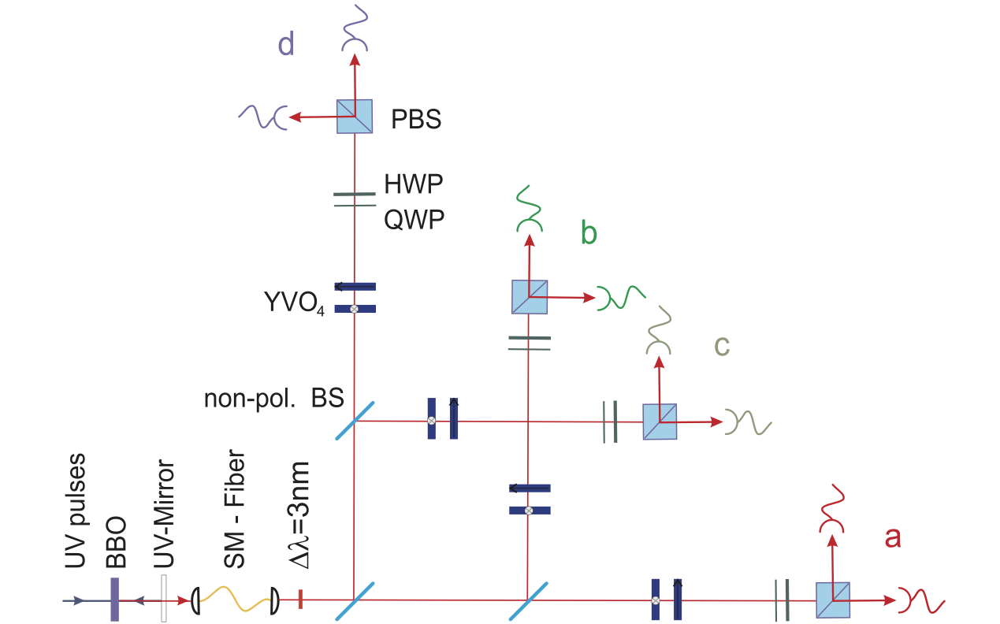
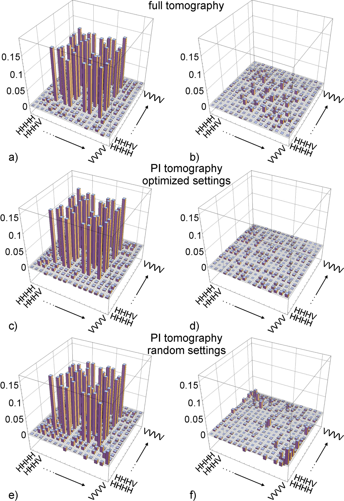
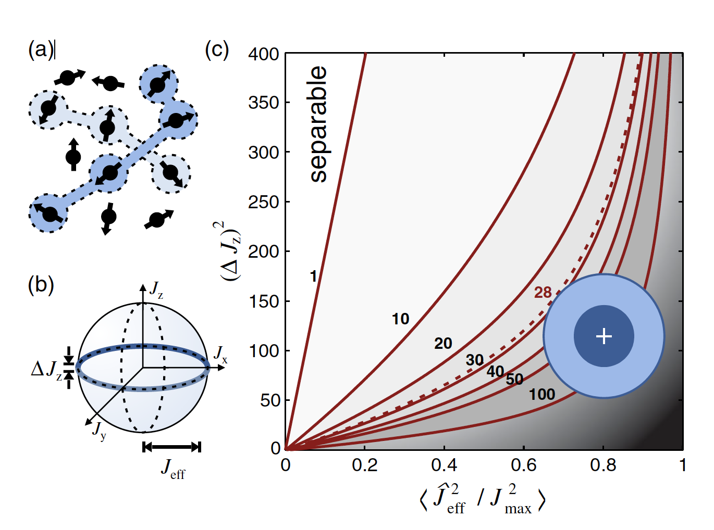
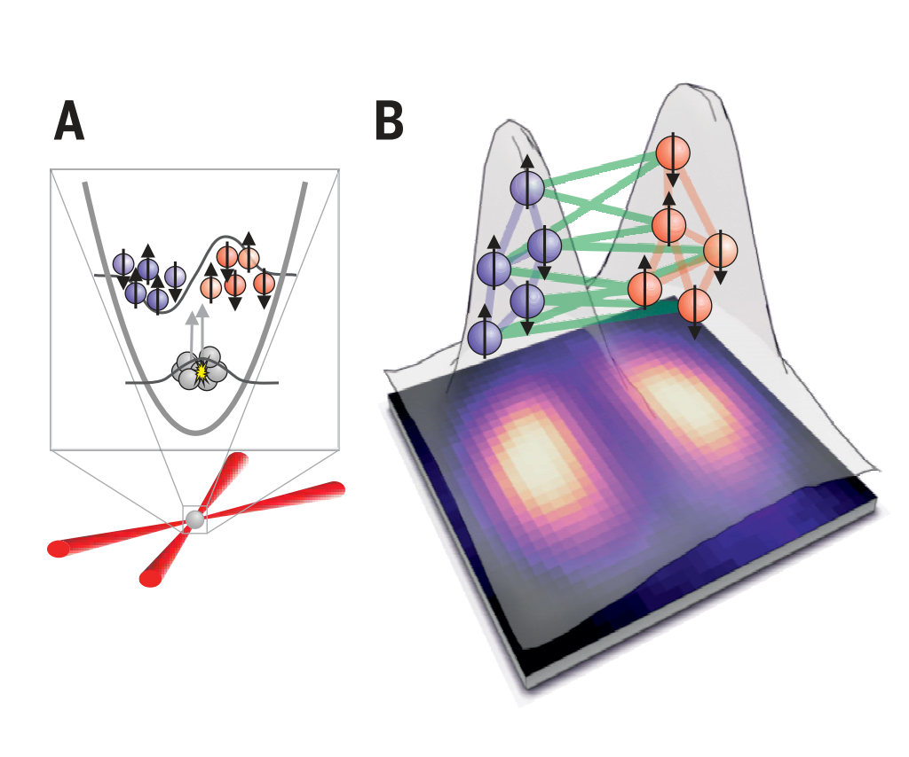

Research
Mathematical aspects of identifying entangled quantum states (entanglement witnesses, nonlinear entanglement criteria, spin squeezing inequalities)
- Methods for the experimental creation and detection of entanglement in quantum optical systems (photonic systems, spin squeezing in cold atomic ensembles, optical lattices of cold atoms)
- Entanglement detetcion in Dicke states realzied with photons (collaboration with the group of Harald Weinfurter, MPQ, Munchen)
- Multi-particle singlet states in cold gases (collaboration with the group of Morgan W. Mitchell at ICFO)
- Entanglement detetcion in Dicke states realized with cold gases (collaboration with the group of Carsten Klempt, Hannover)
- Scalable state tomography (Permutationally Invariant Quantum Tomography, collaboration with the group of Harald Weinfurter, MPQ, Munchen)
- Application of entangled quantum states for quantum metrology (e.g., differential magnetometry with cold atomic ensembles)
- Quantum metrology, quantum Fisher Information and its relation to multipartite entanglement
- Foundations of quantum theory (Bell inequalities and local hidden variable models)

1. Polytope of separable states for the Optimal Spin Squeezing Inequalities. [Figure from Phys. Rev. Lett. 99, 25045 (2007); Phys. Rev. A 79, 042334 (2009).]
2. Setup generating a four-qubit symmetric Dicke state with two excitations with parametric down-conversion in a BBO crystal, linear optical elements and detectors. [Figure from Phys. Rev. Lett. 98, 063604 (2007).]



3. Results of Permutationally Invariant Tomography in a four-photon experiment [Figure from Phys. Rev. Lett. 105, 250403 (2010).]
4. Multipartite entanglement in Dicke states created with cold gases [Figure from Phys. Rev. Lett. 112, 155304 (2014). ]
5. Bipartite entanglement in Dicke states created with cold gases [Figure from Science 360, 416 (2018).]